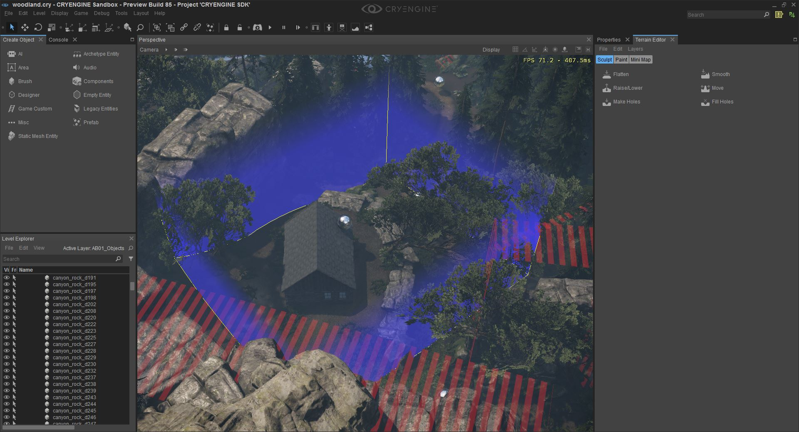

Обзор
Sandbox поставляется с множеством различных опций импорта и экспорта ландшафта, включая, помимо прочего, экспорт в блоки ландшафта FBX.
Выбор местности
Для начала мы выберем небольшой участок местности, расположенный на уровне образца Woodland, который поставляется с CRYENGINE SDK.
Чтобы выбрать местность, нажмите «Редактор местности» в правой части экрана. Затем продолжайте нажимать Правка->Выбрать местность для доступа к инструменту ландшафта.
Теперь, избегая выбора каких-либо объектов/кистей на уровне, перетащите указатель мыши по ландшафту, чтобы сформировать фигуру.

Экспорт в блок ландшафта
Как упоминалось ранее, при работе с ландшафтом в CRYENGINE доступно множество различных опций.
Для начала мы собираемся использовать встроенную опцию экспорта в файл блока ландшафта (.trb). Экспорт в блок ландшафта экспортирует как форму местности, так и объекты растительности в пределах этого радиуса местности.
Чтобы экспортировать в блок ландшафта, просто нажмите меню «Ландшафт», а затем «Экспорт в блок ландшафта». Откроется диалоговое окно с файлом, в котором вы сможете выбрать местоположение и имя вашего файла Terrain Block.
Последним шагом перед закрытием леса будет экспорт слоев ландшафта, причина этого будет понятна на этапе импорта. См. Импорт и экспорт слоев для получения информации о том, как это сделать.
Импорт из блока ландшафта
Важно отметить, что при импорте блока ландшафта размеры карты высот должны совпадать от исходного до конечного уровней.
Чтобы продемонстрировать эту функцию, мы импортируем ранее экспортированный блок местности из леса на совершенно новый уровень.
Просто нажмите меню «Ландшафт» и «Импортировать блок ландшафта», затем выберите файл .trb, который был экспортирован в предыдущем разделе.
Вы заметите, что по умолчанию местность выглядит не совсем правильно. Это связано с тем, что слои ландшафта не были импортированы на новый уровень.
Если вы следовали инструкциям ранее, теперь вы сможете импортировать слои ландшафта, и после небольшой перерисовки у вас должно получиться что-то вроде этого:
Экспорт ландшафта в FBX/OBJ
Продолжая раздел «Выбор ландшафта» выше, теперь, когда у нас выбран ландшафт, давайте экспортируем его, чтобы мы могли использовать его внутри инструмента DCC.
Для этого нажмите Файл -> Экспортировать область местности
Откроется диалоговое окно файла, которое позволит вам сохранить выбранный ландшафт в формате файла FBX или OBJ.
Давайте посмотрим, как это выглядит внутри 3ds Max!
Экспорт ландшафта и объектов в FBX/OBJ
Как и выше, выберите область местности и нажмите Файл -> Экспортировать область местности с объектами.
Разница с этим методом заключается не только в том, что будет экспортирована сетка ландшафта, но и любые объекты в пределах границы выделения области.
Как вы можете видеть, в дополнение к сетке ландшафта в файл FBX также были сохранены активы внутри границ, включая актив полусферического небесного купола с уровня Леса.